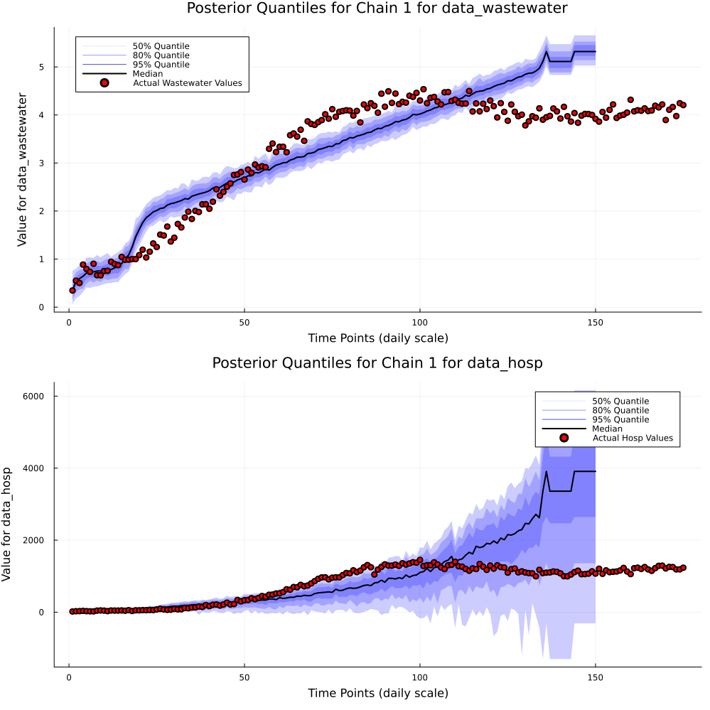
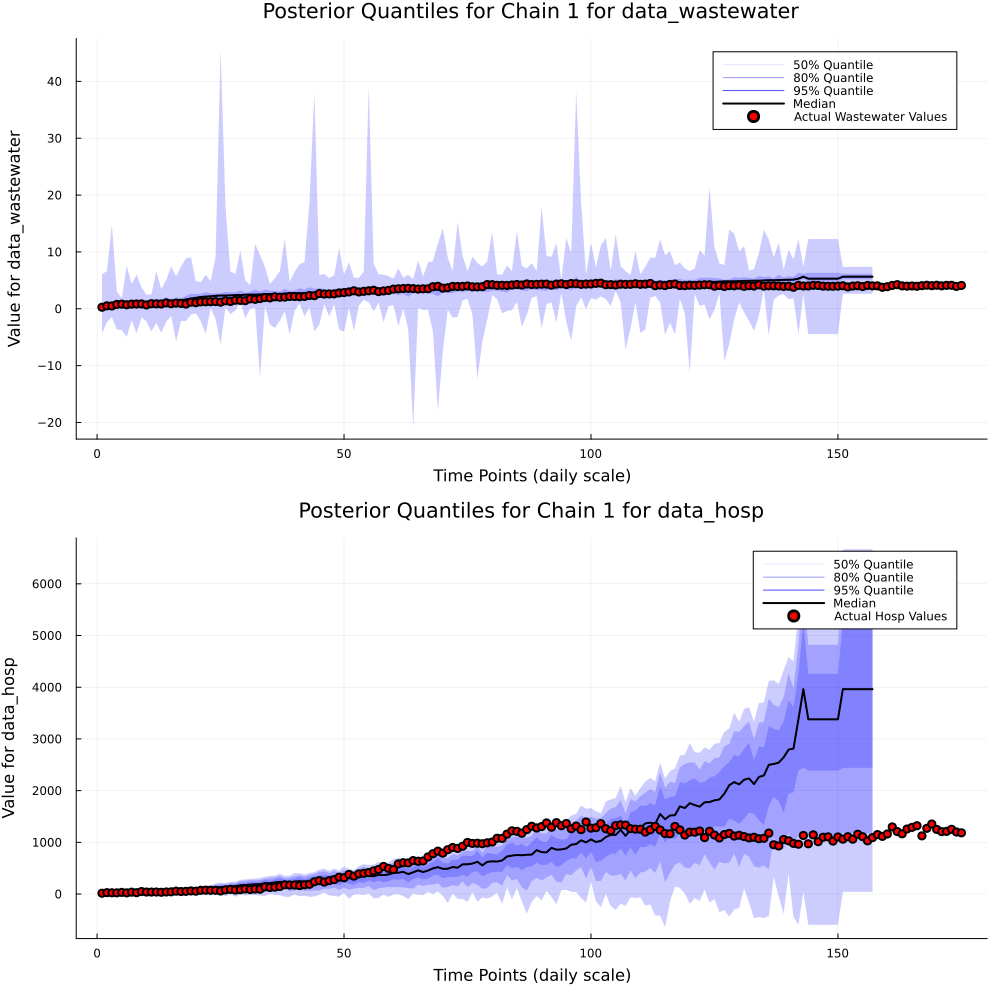
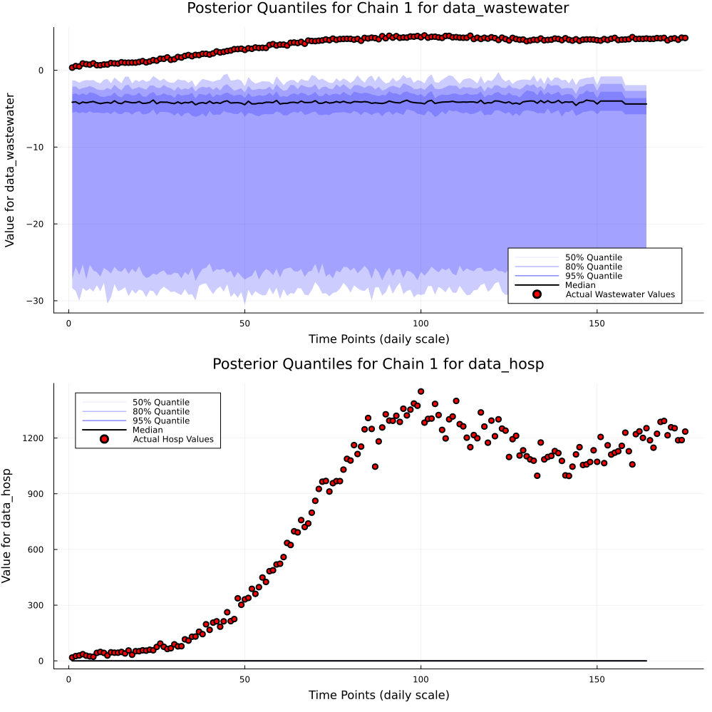
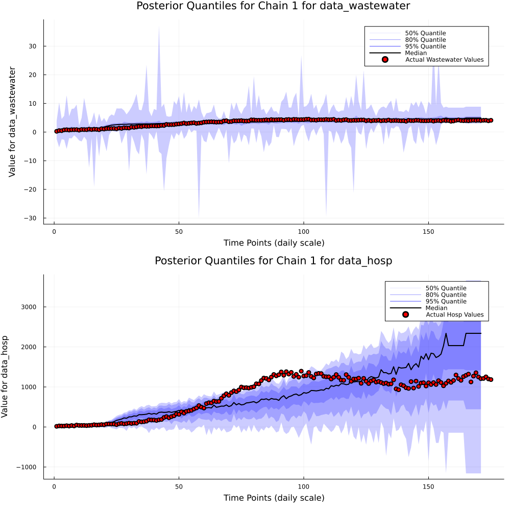

Generating Repeated Forecasts Using the UCIWWEIHR model.
Here we show how we can construct repeated forecasts using the UCIWWEIHR model. We start with generating out data using generate_simulation_data_uciwweihr's alternate parameterization where we do prespecify the effective reproduction number and hospitalization probability.
1. Data Generation.
Here we simulate a dataset, one with 175 time points.
using UCIWWEIHR
# Running simulation function with presets
rt_custom = vcat(
range(1, stop=1.8, length=7*4),
fill(1.8, 7*2),
range(1.8, stop=1, length=7*8),
range(0.98, stop=0.8, length=7*2),
range(0.8, stop=1.1, length=7*6),
range(1.1, stop=0.97, length=7*3)
)
w_custom = vcat(
range(0.3, stop=0.38, length=7*5),
fill(0.38, 7*2),
range(0.38, stop=0.25, length=7*8),
range(0.25, stop=0.28, length=7*2),
range(0.28, stop=0.34, length=7*6),
range(0.34, stop=0.28, length=7*2)
)
params = create_uciwweihr_sim_params(
time_points = length(rt_custom),
Rt = rt_custom,
w = w_custom
)
df = generate_simulation_data_uciwweihr(params)
first(df, 5)| Row | obstimes | log_ww_conc | hosp | rt | wt | E_ode_comp_sol | I_ode_comp_sol | H_ode_comp_sol |
|---|---|---|---|---|---|---|---|---|
| Int64 | Float64 | Int64 | Float64 | Float64 | Float64 | Float64 | Float64 | |
| 1 | 1 | 0.347026 | 18 | 1.0 | 0.3 | 170.466 | 129.534 | 20.8891 |
| 2 | 2 | 0.550405 | 26 | 1.02963 | 0.302353 | 150.527 | 149.473 | 22.5594 |
| 3 | 3 | 0.503247 | 29 | 1.05926 | 0.304706 | 137.656 | 163.007 | 24.6122 |
| 4 | 4 | 0.885447 | 36 | 1.08889 | 0.307059 | 129.721 | 172.364 | 26.7834 |
| 5 | 5 | 0.794372 | 28 | 1.11852 | 0.309412 | 125.254 | 179.064 | 28.9256 |
2. Constructing Repeat Forecasts.
We use the repeated_forecast function to generate forecasts for a given number of weeks, for a given number of time points. Along with this we need to specify presets. Output of this function is an array with the first index controlling which result we are looking at. The next contains a uciwweihr_gq_pp output.
data_hosp = df.hosp
data_wastewater = df.log_ww_conc
obstimes_hosp = df.obstimes
obstimes_wastewater = df.obstimes
max_obstime = max(length(obstimes_hosp), length(obstimes_wastewater))
param_change_times = 1:7:max_obstime # Change every week
priors_only = false
n_samples = 200
n_forecast_weeks = 2
forecast_points = [
param_change_times[end-5],
param_change_times[end-4],
param_change_times[end-3],
param_change_times[end-2]
]
model_params = create_uciwweihr_model_params()
rep_results = repeated_forecast(
data_hosp,
data_wastewater,
obstimes_hosp,
obstimes_wastewater;
n_samples = n_samples,
params = model_params,
n_forecast_weeks = 2,
forecast_points = forecast_points
)
first(rep_results, 2)2-element Vector{Any}:
Vector[AbstractVector[[18, 26, 29, 36, 28, 24, 22, 43, 48, 43 … 1098, 1194, 1212, 1106, 1134, 1102, 1085, 1078, 997, 1176], [0.3470256452290231, 0.5504052568775065, 0.5032465035820112, 0.8854468018101448, 0.7943722906258144, 0.7326062459711118, 0.9031816859718784, 0.6651544997374057, 0.6621119546322024, 0.7523547654550962 … 3.879952457492709, 4.21776048218676, 4.06605557786951, 3.97446956404358, 4.006369948865927, 3.7837478692219753, 3.8675931784165853, 3.973924170096727, 3.942822816581617, 4.1383166461738545], [1, 2, 3, 4, 5, 6, 7, 8, 9, 10 … 125, 126, 127, 128, 129, 130, 131, 132, 133, 134], [1, 2, 3, 4, 5, 6, 7, 8, 9, 10 … 125, 126, 127, 128, 129, 130, 131, 132, 133, 134], 1:1:20], DataFrames.DataFrame[187×274 DataFrame
Row │ iteration chain data_wastewater[1] data_wastewater[2] data_wastewat ⋯
│ Int64 Int64 Float64 Float64 Float64 ⋯
─────┼──────────────────────────────────────────────────────────────────────────
1 │ 1 1 18.7547 18.5064 18. ⋯
2 │ 2 1 18.537 18.6514 18.
3 │ 3 1 12.7056 12.7843 12.
4 │ 4 1 11.0241 11.3808 10.
5 │ 5 1 5.77652 5.6189 5. ⋯
6 │ 6 1 5.58065 5.49609 5.
7 │ 7 1 5.48132 5.38742 5.
8 │ 8 1 5.54024 5.37222 5.
⋮ │ ⋮ ⋮ ⋮ ⋮ ⋮ ⋱
181 │ 181 1 5.52037 5.80256 5. ⋯
182 │ 182 1 5.33552 5.57997 5.
183 │ 183 1 5.40459 5.48753 5.
184 │ 184 1 5.37943 5.34323 5.
185 │ 185 1 5.40597 5.44568 5. ⋯
186 │ 186 1 5.30755 5.40873 5.
187 │ 187 1 5.59796 5.25456 5.
270 columns and 172 rows omitted, 187×792 DataFrame
Row │ iteration chain E_init I_init H_init alpha_ ⋯
│ Int64 Int64 Float64 Float64 Float64 Float6 ⋯
─────┼──────────────────────────────────────────────────────────────────────────
1 │ 1 1 5.96869e40 2.70045e-8 32304.1 0.15 ⋯
2 │ 2 1 5.96869e40 2.70045e-8 32304.1 0.15
3 │ 3 1 1.08334e35 8.81606e-5 6446.14 0.17
4 │ 4 1 2.27477e35 0.716709 32989.2 0.19
5 │ 5 1 8.51319e36 4.25191 1.18288e5 0.18 ⋯
6 │ 6 1 4.01619e19 4.75454e-6 2147.28 0.15
7 │ 7 1 8.52675e36 0.000662014 60971.0 0.16
8 │ 8 1 2.97377e40 8.93505e-5 1.38255e5 0.15
⋮ │ ⋮ ⋮ ⋮ ⋮ ⋮ ⋮ ⋱
181 │ 181 1 2.83868e-18 1.96464e12 84.2593 0.14 ⋯
182 │ 182 1 3.13229e-21 4.26657e12 60.4267 0.12
183 │ 183 1 5.74179e-20 2.45506e15 283.77 0.12
184 │ 184 1 3.43415e-17 4.22346e15 35.9294 0.12
185 │ 185 1 8.49577e10 1.17205e19 97.1908 0.13 ⋯
186 │ 186 1 9677.64 2.38625e22 0.00279521 0.13
187 │ 187 1 3.01358e16 1.30678e13 1.07333 0.32
787 columns and 172 rows omitted, 200×65 DataFrame
Row │ iteration chain E_init_non_centered I_init_non_centered H_init_non_ ⋯
│ Int64 Int64 Float64 Float64 Float64 ⋯
─────┼──────────────────────────────────────────────────────────────────────────
1 │ 1 1 1.77183 -1.10162 ⋯
2 │ 2 1 1.77183 -1.10162
3 │ 3 1 1.50744 -0.697076
4 │ 4 1 1.52228 -0.246913
5 │ 5 1 1.59473 -0.15789 ⋯
6 │ 6 1 0.796823 -0.843079
7 │ 7 1 1.59476 -0.59627
8 │ 8 1 1.7579 -0.696406
⋮ │ ⋮ ⋮ ⋮ ⋮ ⋮ ⋱
194 │ 194 1 -0.91403 1.18506 ⋯
195 │ 195 1 -1.05022 1.22383
196 │ 196 1 -0.992045 1.54159
197 │ 197 1 -0.86417 1.56871
198 │ 198 1 0.397342 1.96513 ⋯
199 │ 199 1 0.0775851 2.34607 -
200 │ 200 1 0.652923 1.2798 -
61 columns and 185 rows omitted]]
Vector[AbstractVector[[18, 26, 29, 36, 28, 24, 22, 43, 48, 43 … 1078, 997, 1176, 1085, 1098, 1104, 1130, 1119, 1077, 999], [0.3470256452290231, 0.5504052568775065, 0.5032465035820112, 0.8854468018101448, 0.7943722906258144, 0.7326062459711118, 0.9031816859718784, 0.6651544997374057, 0.6621119546322024, 0.7523547654550962 … 3.973924170096727, 3.942822816581617, 4.1383166461738545, 3.901606445055345, 3.9531924835965233, 3.981038107330166, 4.135060546324441, 4.074674542892423, 3.9256992569673375, 4.16988625143474], [1, 2, 3, 4, 5, 6, 7, 8, 9, 10 … 132, 133, 134, 135, 136, 137, 138, 139, 140, 141], [1, 2, 3, 4, 5, 6, 7, 8, 9, 10 … 132, 133, 134, 135, 136, 137, 138, 139, 140, 141], 1:1:21], DataFrames.DataFrame[198×288 DataFrame
Row │ iteration chain data_wastewater[1] data_wastewater[2] data_wastewat ⋯
│ Int64 Int64 Float64 Float64 Float64 ⋯
─────┼──────────────────────────────────────────────────────────────────────────
1 │ 1 1 11.4164 11.5939 11. ⋯
2 │ 2 1 11.3836 11.7231 11.
3 │ 3 1 11.3596 11.4482 11.
4 │ 4 1 9.41121 9.55359 9.
5 │ 5 1 2.52335 2.54274 2. ⋯
6 │ 6 1 2.56021 2.56415 2.
7 │ 7 1 3.07991 3.12233 3.
8 │ 8 1 3.24812 3.20234 3.
⋮ │ ⋮ ⋮ ⋮ ⋮ ⋮ ⋱
192 │ 192 1 5.45921 5.4174 5. ⋯
193 │ 193 1 5.49045 5.35685 5.
194 │ 194 1 5.49818 5.44307 5.
195 │ 195 1 5.41988 5.34117 5.
196 │ 196 1 5.60165 5.52708 5. ⋯
197 │ 197 1 5.60866 5.42566 5.
198 │ 198 1 5.25028 5.43807 5.
284 columns and 183 rows omitted, 198×830 DataFrame
Row │ iteration chain E_init I_init H_init alpha_t[1] al ⋯
│ Int64 Int64 Float64 Float64 Float64 Float64 Fl ⋯
─────┼──────────────────────────────────────────────────────────────────────────
1 │ 1 1 1.57348e20 4.47134e5 0.0530636 0.194159 ⋯
2 │ 2 1 1.57348e20 4.47134e5 0.0530636 0.194159
3 │ 3 1 1.57348e20 4.47134e5 0.0530636 0.194159
4 │ 4 1 7.01044e24 2.17792e6 0.0254742 0.170248
5 │ 5 1 1.28527e15 0.00199992 0.0320848 0.162447 ⋯
6 │ 6 1 1.28527e15 0.00199992 0.0320848 0.162447
7 │ 7 1 2.2737e15 0.0493993 0.0143634 0.163623
8 │ 8 1 2.2737e15 0.0493993 0.0143634 0.163623
⋮ │ ⋮ ⋮ ⋮ ⋮ ⋮ ⋮ ⋱
192 │ 192 1 3.41784 3.47436e12 30.5272 0.232402 ⋯
193 │ 193 1 4.49213e-24 6.0286e22 6.57442 0.13486
194 │ 194 1 3.96117e-22 3.75053e17 11.0096 0.178811
195 │ 195 1 2.44202e-11 1.8263e20 2.82052 0.16291
196 │ 196 1 1.61499e-7 5.91224e17 8.65339 0.197786 ⋯
197 │ 197 1 5.05526e-33 7.40905e12 168.804 0.161212
198 │ 198 1 3.99473e-30 6.06841e12 75.0675 0.147105
824 columns and 183 rows omitted, 200×67 DataFrame
Row │ iteration chain E_init_non_centered I_init_non_centered H_init_non_ ⋯
│ Int64 Int64 Float64 Float64 Float64 ⋯
─────┼──────────────────────────────────────────────────────────────────────────
1 │ 1 1 0.824133 0.420272 - ⋯
2 │ 2 1 0.824133 0.420272 -
3 │ 3 1 0.824133 0.420272 -
4 │ 4 1 1.03822 0.499435 -
5 │ 5 1 0.589829 -0.540991 - ⋯
6 │ 6 1 0.589829 -0.540991 -
7 │ 7 1 0.601237 -0.380649 -
8 │ 8 1 0.601237 -0.380649 -
⋮ │ ⋮ ⋮ ⋮ ⋮ ⋮ ⋱
194 │ 194 1 -0.0813862 1.21356 ⋯
195 │ 195 1 -1.18116 2.39241 -
196 │ 196 1 -1.09157 1.79303 -
197 │ 197 1 -0.594679 2.10244 -
198 │ 198 1 -0.418742 1.81579 - ⋯
199 │ 199 1 -1.59326 1.25143
200 │ 200 1 -1.45982 1.24145
63 columns and 185 rows omitted]]3. Visualizing Results Of Repeated Forecasts.
We can take a look at these forecasts using the uciwweihr_visualizer function. We can also add certain parameters to ensure we only see the plots we want.
for res_index in 1:length(forecast_points)
uciwweihr_visualizer(
data_hosp,
data_wastewater,
n_forecast_weeks,
obstimes_hosp,
obstimes_wastewater,
param_change_times,
2024,
true,
model_params;
pp_samples = rep_results[res_index][2][1],
gq_samples = rep_results[res_index][2][2],
obs_data_hosp = data_hosp,
obs_data_wastewater = data_wastewater,
actual_rt_vals = df.rt,
actual_w_t = df.wt,
actual_non_time_varying_vals = params,
bayes_dist_type = "Posterior",
mcmcdaigs = false,
time_varying_plots = false,
non_time_varying_plots = false,
pred_param_plots = true,
save_plots = true,
plot_name_to_save_pred_param = "mcmc_pred_parameter_plots_rep_res"*string(res_index)
)
endMCMC Diagnostics Plots are not requested.
MCMC time varying parameter results are not requested.
MCMC non-time varying parameter results are not requested.
GKS: Possible loss of precision in routine SET_WINDOW
Plot saved to plots/mcmc_ode_solution_plots.png
Plot saved to plots/mcmc_pred_parameter_plots_rep_res1.png
MCMC Diagnostics Plots are not requested.
MCMC time varying parameter results are not requested.
MCMC non-time varying parameter results are not requested.
Plot saved to plots/mcmc_ode_solution_plots.png
Plot saved to plots/mcmc_pred_parameter_plots_rep_res2.png
MCMC Diagnostics Plots are not requested.
MCMC time varying parameter results are not requested.
MCMC non-time varying parameter results are not requested.
Plot saved to plots/mcmc_ode_solution_plots.png
Plot saved to plots/mcmc_pred_parameter_plots_rep_res3.png
MCMC Diagnostics Plots are not requested.
MCMC time varying parameter results are not requested.
MCMC non-time varying parameter results are not requested.
Plot saved to plots/mcmc_ode_solution_plots.png
Plot saved to plots/mcmc_pred_parameter_plots_rep_res4.png3.1. Forecast Point 1.

3.2. Forecast Point 2.

3.3. Forecast Point 3.

3.4. Forecast Point 4.
